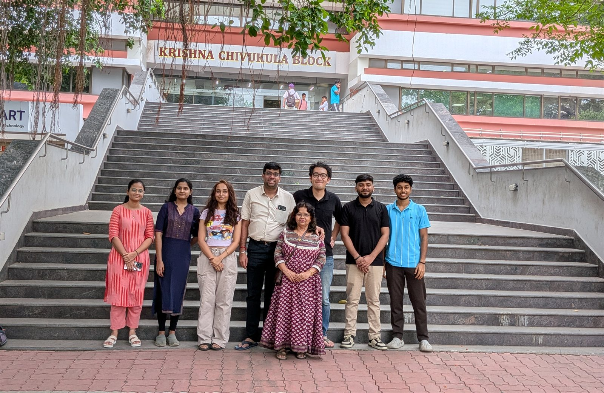
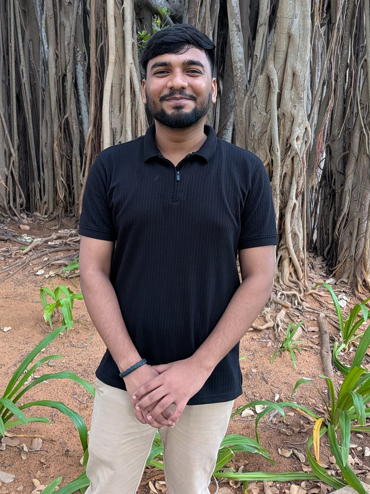
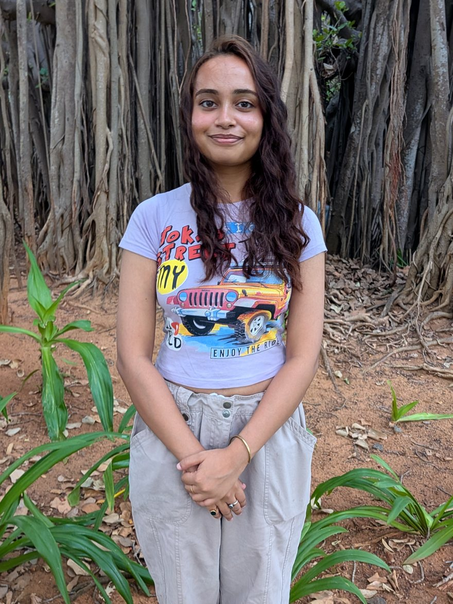
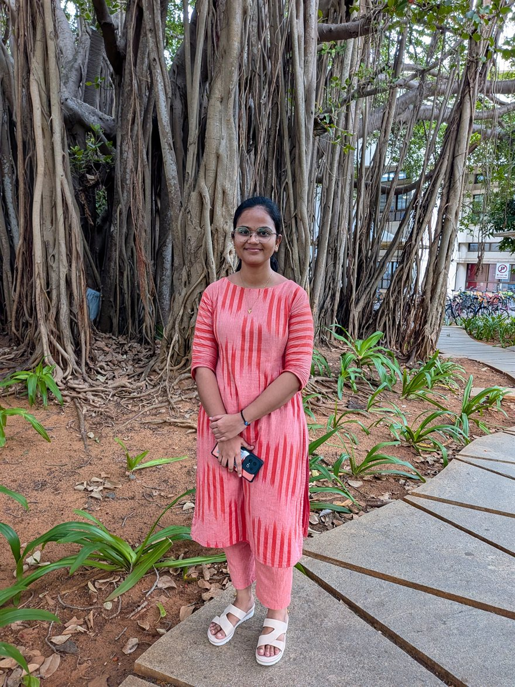

Students & Team

Current Members
Ph.D

Working on the development of ultra-high-temperature ceramics (UHTCs)

Working on materials development for electrocatalytic ammonia splitting, with emphasis on composition control and structure–reactivity relationships.

Starting research on polymer-derived ceramics (PDCs), with a focus on their application in catalysis and bioapplication.

Working on the development of materials for bioapplication.
Dual Degree
To be updated.
M.Tech

Working on the development of photocatalytic materials for energy and environmental applications.
Master (M.S.)

Working on an industry-sponsored project focused on the development of high-purity ceramic powders for semiconductor applications, with emphasis on precursor optimization and process control.
B.Tech
To be updated.
Project Staff

Working on an industry-sponsored project focused on the development of high-purity ceramic powders for semiconductor applications, with emphasis on precursor optimization and process control.
Internship
To be updated.
Postdoc
To be updated.
Alumni
Ph.D
To be updated.
M.Tech
Ms. Nethala Leela Naga Venkata Lakshmi (2026)
Master Dual Degree
To be updated.
Master (M.S.)
To be updated.
B.Tech
Ms. Karthikayini S (2026)
Internship
To be updated.
Postdoc
To be updated.
Project Staff
To be updated.